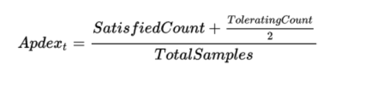

Apdex is an industry standard to measure users' satisfaction with the response time of web applications and services. It's basically a simplified Service Level Agreement (SLA) solution that gives application owners better insight into how satisfied users are.”
It works by specifying a goal for how long a specific webrequest or transaction should take. Those transactions are then bucketed in to saticified (fast), tolerating (sluggish), too slow and failed requests.
A simple math formula is applied to provide a score from 0 to 1.

Average Response Time is the amount of time an application takes to return a request to a user.
To measure Average Response Time, an application should be tested under different circumstances (i.e. number of concurrent users, number of transactions requested).
There are potentially 3 different ways of to track applicaiton errors:
HTTP Error % – Number of web requests that ended in an error
Logged Exceptions – Number of unhandled and logged errors from your application
Thrown Exceptions – Number of all exceptions that have been thrown
how many server/application instances you have running (if your application is running in cloud with autosclalling enabled)
how much traffic your application receives will impact the success of your application?
Request rates can be useful to correlate to other application performance metrics to understand the dynamics of how your application scales.
Monitoring the request rate can also be good to watch for spikes or even inactivity. If you have a busy API that suddenly gets no traffic at all, that could be a really bad thing to watch out for.
A similar but slightly different metric to track is the number of concurrent users. This is another interesting metric to track to see how it correlates.
Monitoring and measuring if your application is online and available is a key metric you should be tracking. Most companies use this as a way to measure uptime for service level agreements (SLA).
If you have a web application, the easiest way to monitor application availability is via a simple scheduled HTTP check.
Retrace can run these types of HTTP “ping” checks every minute for you. It can monitor response times, status codes, and even look for specific content on the page.
When garbage collection occurs, it can cause your process to suspend and can use a lot of CPU.
Garbage collection metrics may not be one of the first things you think about key application performance metrics. It can be a hidden performance problem that is always a good idea to keep an eye on.